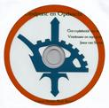
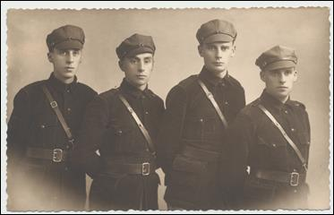
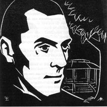
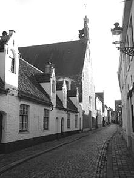
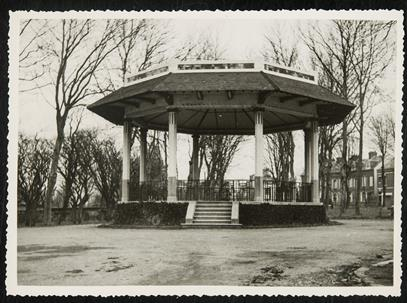

> nieuwsbrief > JAAR 2015 nr 2
Inhoud
Herdenkingsplechtigheden 2015
Hernieuwen
ledenbijdrage voor 2015
Terugblikkend
op de uitdagingen van 2014 kunnen we 2015 met een gerust gemoed
aanpakken en teruggrijpen naar de geplogenheden van voorheen,
zijnde het uitbrengen van een gewoon jaarboek het 19e al
en het publiceren van onze driemaandelijkse Nieuwsbrief in zijn
nieuw voorkomen. Dit
brengt met zich mee dat we ook inzake ledenbijdrage voor 2015
kunnen beperken tot 29 als minimumbijdrage (waarin
uiteraard begrepen jaarboek en Nieuwsbrief). Zie voor
de lidmaatschapsbijdrage onze bankgegevens. Een vooruitblik op
de inhoud van het jaarboek 2015 leest u verderop in dit nummer.
Herdenkingen
2015
Het
programma van de herdenkingsplechtigheden ingericht door de Stichting Joris van Severen
en het Brugse Abbeville-comité
op zaterdag 23 en zondag 24 mei hebben we handig samengebundeld
op de middenpaginas van deze Nieuwsbrief.
Ondertussen
zijn ook Franse historici zich bewust van wat er zich in de
meimaand van 1940 te Abbeville afgespeeld heeft, getuige de
bijdrage verderop in dit nummer.
Waarom
de Stichting Joris van Severen al na één jaar Zevenkerken moest
uitwijken naar een nieuwe locatie licht haar voorzitter Luc
Seynaeve toe, terwijl Vik Eggermont zich in een open brief
ergert aan de regelrechte misleiding rond het Colloquium Joris
van Severen door De
Standaard.
In
dit nummer vanzelfsprekend ook een blik op de inhoud van ons 19e
Jaarboek Joris van Severen, dat medio mei verschijnt.
Voorstelling
fotobiografie van Joris van Severen
Onderstaande
weergalm op ons 6e Colloquium en op de ermee gepaard gaande
boekvoorstelling willen we u niet onthouden:
Gisteren
was
ik aanwezig op de voorstelling van de fotobiografie van Joris
van Severen, leider van de beweging Verdinaso (Verbond van
Dietse Nationaal-Solidaristen. Dit boek is van de hand van
Pieter Jan Verstraete (auteur van vele biografieën van
prominente Vlaamse figuren) en Maurits Cailliau. Deze
boekvoorstelling was het afsluitend onderdeel van een
colloquium, georganiseerd door het Studiecentrum Joris van
Severen. Dit colloquium vond plaats in "de Baliekouter" in zijn
geboortedorp Wakken (waar zijn vader trouwens notaris en
burgemeester was). In deze oude hoeve is ook een kleinschalig
museum "Wakken herdenkt", gewijd aan priester-schrijver Hugo
Verriest, Verdinaso-leider Joris van Severen en schrijver André
Demedts.
Joris
van
Severen was een van de weinige echt charismatische voormannen
die Vlaanderen gekend heeft. De eeuwige vraag is hoe de Vlaamse
geschiedenis (inclusief de collaboratie) zou verlopen zijn
indien hij niet zou vermoord zijn in 1940 in Abbeville door
dronken Franse soldaten.
Het
boek
is werkelijk indrukwekkend. Bijna 700 foto's, waarvan een groot
deel niet eerder gepubliceerd, verhalen chronologisch het leven
van deze Vlaamse voorman. Oorlogsvrijwilliger aan het IJzerfront
(gedegradeerd als officier wegens zijn activiteiten binnen de
Frontbeweging), parlementariër voor de Frontpartij gedurende 2
legislaturen. Daarna zette hij zich af tegen de parlementaire
democratie zoals die toen gekend was. Hij wou niet langer deel
uitmaken van een politieke partij. Daarom stichtte hij de
beweging Verdinaso. Later evolueerden zijn denkbeelden waardoor
hij binnen de Vlaams Beweging ook heel wat tegenstanders kende.
Hij streefde immers niet langer naar Vlaamse onafhankelijkheid
maar naar een historische vereniging van Nederland, België en
Luxemburg.
_____________________
Bron: http://vlaamsbelangnevele.skynetblogs.be/tag/wakken%2Bmaurits%2Bcailliau
blog Nevelse
Sprokkels van Olaf Ervrad, 26.10.2014.
Bijlage
aan de Fotobiografie: DVD Eindpunt en Opdracht
Naar aanleiding van het
traditionele bezoek aan de graven van Joris van Severen en Jan
Ryckoort van 1987 werd door het toenmalige Nationaal Studie- en
Documentatiecentrum Joris van Severen een video aangemaakt,
gerealiseerd door de studioploeg van Rudi Reusens. Deze video
waarop historische filmbeelden over het Verdinaso afwisselen met
beelden van de herdenking in 1987, maakt als DVD-bijlage deel
uit van de Fotobiografie
en geeft het boek aldus een sterke visuele meerwaarde. Bovendien
werden aan de reportage van 1987 originele filmbeelden
toegevoegd van jeugdkampen van het Jong- Dinaso.
Sinds
het afsluiten van de voorintekeningen geldt de prijs van 55 (+
10 verzendkosten voor wie het jaarboek (met DVD) via de post
wenst te ontvangen). De Fotobiografie
leent zich overigens ook uitstekend als relatiegeschenk
Ten geleide bij het 19e Jaarboek Joris van Severen
Maurits
Cailliau
Niet zonder enige trots kunnen
we terugblikken op de realisaties van het Studiecentrum Joris
van Severen in het voorbije jaar. Met het jaarboek 18, onder
vorm van de grote Fotobiografie
over Joris van Severen en zijn beweging, konden we als het ware
een standbeeld neerzetten dat nog in lengte van jaren als een
referentiewerk zal gelden.
Ook ons 6e colloquium zal de
aanwezigen nog lang heugen niet het minst omwille van de
laag-bij-de-grondse persheisa er rond waarbij notabene met
geen woord werd gerept over de inhoudelijke draagwijdte van het
colloquium, maar des temeer aan platvloerse partijpolitieke
stemmingmakerij gedaan werd. Koenraad Degroote, de Wakkense
burgemeester en onze gastheer, wist dit onwaardig gedoe
overigens even passend als flegmatiek te pareren.
Van een aanmerkelijk hoger
niveau getuigden ook de gedachtewisselingen n.a.v. de referaten,
waarbij het o.m. ging over de vraag in hoeverre het Verdinaso
een fascistische beweging was, zoals Tom
Cobbaert ze genoemd had in zijn referaat. Een
term die Van Severen nooit in de mond genomen had om zijn
beweging te karakteriseren, stelde Luc
Pauwels. Van Severen had overigens een klare lijn
getrokken toen hij de grens aldus verwoorde: Fascisme:
primauteit van de Staat; Nationaalsocialisme: primauteit van het
ras; Nationaalsolidarisme: primauteit van de persoon. Een
wereld van verschil!
Laten we overigens niet vergeten
dat het fascisme in de jaren van het interbellum weinig te maken
had met het hedendaagse container-begrip met die naam. Toen was
het met zijn corporatistische alternatieven - veeleer een
algemeen aanvaarde politieke optie naast andere, bij het zoeken
naar een derde weg tegen de uitwassen van een ongebreideld
liberalisme en de ontsporingen van het marxisme.
In dit 19e jaarboek komen we
uitgebreid terug op het colloquium: naast de inleiding van Vik Eggermont brengen we de
integrale referaatteksten van Luc
Pauwels over Joris van Severen in
het brede Europees perspectief, en van Tom Cobbaert over Diets
en Europees? Een
onderzoek naar de Europese gedachte bij het Verdinaso.
Het laatste kwartaal van 1920
van het Dagboek Joris van Severen bleef
nog ongepubliceerd. We brengen het in dit jaarboek en leren
daaruit hoe sensibel de auteur voelde en handelde en met welke
problemen en struikelstenen hij, zowel als gevoelsmens als in
zijn rol als medespeler in de Vlaamse Beweging, te maken kreeg.
1920 is trouwens het jaar waarin hij eindelijk een lang
gekoesterde droom kon verwezenlijken: de uitgave van zijn
tijdschrift Ter Waarheid.
In zijn bijdrage Een
lastig verkiezingsjaar. Joris van Severen 1925,
brengt Romain Vanlandschoot
een volgend luik van zijn verfijnde biografie. Daarbij heeft
hij, naast de electorale bekommernissen van die dagen, ook volop
aandacht voor de geestelijke evolutie die Joris van Severen
doormaakte. Volgens de auteur en wie zal hem tegenspreken?
is dat jaar beslissend geweest in Van Severens omslag, waarbij
hij zijn geloof in de parlementaire democratie verloor en
definitief koos voor een autoritair maatschappelijk concept.
Luc
Delafortrie, stammend uit een Daensistisch
geslacht, heeft in het Verdinaso een belangrijke rol gespeeld.
In Verdinaso en
Collaboratie mijn aandeel schetst hij de
gebeurtenissen van die wondere zomer van 40, toen zijn
beweging, onthoofd door de moord op haar leider, ontredderd
achterbleef en door de Duitse bezetter in een hoek gedreven werd
die niet de hare was. Heel even heeft hij dan tegen de SS in
de kant van de VNV-Eenheidsbeweging gekozen. Maar al vlug bleek
die keuze hem al even nefast. Zijn ontslagbrief aldaar Luc Delafortrie versus
het VNV - vormt een tijdsdocument
op zich.
Van Antoon
van Severen, de auteur van de tweeledige studie Joris
van Severen. Het verhaal van een leven,
brengen we het merkwaardige essay Joris van Severen en de
Vlaamse Beweging. Dat Van Severen een
onmiskenbare rol gespeeld heeft in die beweging staat buiten
kijf. Evenzeer ook dat hij haar definitief achter zich liet en
haar op tal van vlakken oversteeg.
Deze jaarboekaflevering sluit
traditiegetrouw af met een gedicht, dit keer van de hand van de
dichteres Annie Tanghe.
________________
N.a.v. Jaarboek Joris van Severen,
deel 19 (2015), 208 pp, ill., ISBN 9789076057170.
Ledenprijs 29 ; na verschijnen 35 verzending inbegrepen.
Errata en aanvullingen Fotobiografie
Af en toe is
er in de tekstbijdragen sprake van Dietse Militanten Orde. Moet
zijn: Dinaso Militanten Orde
p. 79:
veldoefeningen in Bissegem. Foto vertoont nochtans zelfde
spreekgestoelte en achtergrond als foto 1, p. 77 (= landdag
Tielt).
p. 84: zeker
niet te Sint-Niklaas. Het gebouw heeft ook weinig weg van
stadhuis van Leuven.
p. 94: boven
rechts: Emiel Thiers was advocaat, geen notaris.
p. 120: foto
die genomen is bij het vertrek naar het Oostfront van een
Dinaso-militant (draagt trouwkenteken JvS). Vandaar de bloemen
p. 122 e.v.:
de meeste fotos zijn niet van de Ve maar van de IVe landdag
(1935) in Male (zie ook de fotobrochure daarover).
p.
124: vóór Jules Declercq zit Pol le Roy. Achter
Declercq Norbert de Witte.
p. 129: niet
Pol van Herzeele, maar Pol le Roy.
p. 146: geen
gewestdag, maar de Dinaso Militie met vooraan Marcel Buyse op de
landdag in Tielt.
p. 160: foto
links: niet Leo Poppe maar dezelfde man als die de muziekkapel
leidt op p. 161.
p. 160: foto
links onder: lees Raman i.p.v. Ramen.
p. 170:
links onderaan is geen foto van de DMO-mars in Brussel maar een
foto vanuit de beginjaren van de DM.
p. 174: foto
bovenaan. Helemaal rechts: Jef de Vliegher.
p. 179: foto
rechts onderaan: Jef van Bilsen.
p. 186: foto
links naast Van Severen: Jacques Boseret.
p. 200: foto
bovenaan: aan de achterzijde van de bus Luc Delafortrie.
Centraal in burgerpak: Pol le Roy.
p. 228: foto
links onderaan van rechts naar links: Jef François, Jef Werkers,
Marcel Buyse, Jef Morael, Phille Keersmaeckers.
p. 229: foto
rechts bovenaan: helemaal rechts op de foto Karel
De vier
gebroeders Morael: Jan, Jef, Karel en
Frans

De drie musketiers in dienst
van de Franse koning Lodewijk XIII waren, zoals bekend,
eigenlijk met vier. Maar hier in het fotoboek (fotobiografie)
over Van Severen en het Verdinaso zag ik op bladzij 182 een
unieke oude zwart-wit foto die al bijna vergeeld moet zijn als
een sepia. Hier poseren de vier gebroeders Morael in een sober
en streng uniform van de Dinaso Militanten Orde. Zowel Jan,
Jef, Karel en Frans dragen op het hoofd een soort van stormpet en een
dubbele overdwarse koppelriem en alle vier staan met de handen
op de rug en geen van de vier lacht hier lichtzinnig of
frivool. Het zijn duidelijk vier ernstige jonge idealistische
mannen die geloven in hun Leider en in zijn beweging en die
geloven in hun roeping of in hun missie als trouwe soldaten
die bereid zijn om te strijden en desnoods alles op te offeren
voor hun idealen. Bij de foto staat geen datum vermeld, maar
vermoedelijk is dit een foto die werd genomen vóór de oorlog
in de woelige jaren dertig van de vorige eeuw. De kans dat ze
dus nog in leven zouden zijn is zeer gering en onbestaande.
Wat gebeurde er verder in het leven van deze vier jonge
mannen? Zijn zij in de collaboratie beland of in het verzet?
Werden zij vrijwilligers voor het Oostfront? Of hielden zij
zich afzijdig? Het is en blijft een unieke foto, omdat zij als
vier eendrachtige gebroeders duidelijk dezelfde idealen
incarneerden: Dietsland en Orde, eenheid in de
verscheidenheid, een hang naar grootheid en strijdbaarheid en
alle vier incarneerden zij een soort van soldatesk leven. Het
waren duidelijk geen enge kleinburgers, geen politieke
profiteurs en geen ambitieuze academici; het lijkt mij eerder
duidelijk dat dit vier eenvoudige jonge mannen waren die een
zin aan hun leven wilden geven en het toenmalige Verdinaso
mocht en kon toentertijd fier zijn dat het zulke enthousiaste
leden (en ook geheime leden) in zijn rangen telde. De grootste
(letterlijk) van de vier was Karel en de kleinste was Frans.
Ze lijken, hoe dan ook, toch nog sterk op elkaar, want alle
vier kijken onbevangen en bijna weemoedig en sereen naar de
lens van het fototoestel. Wie heeft deze foto genomen en in
welk jaar? Was het vóór of na de Nieuwe Marsrichting? Zijn zij
later gehuwd en hadden zij zonen en dochters? Zijn zij
gesneuveld? Werden zij in de repressiejaren gemolesteerd en
gearresteerd? Bleven zij hun utopische jeugdidealen trouw? Of
werden zij vermalen door het harde leven? Het zijn prangende
vragen die mij blijven kwellen. Maar dankzij de publicatie van
dit boek krijgen zij alsnog het eeuwige leven.
Hendrik Carette
75 JAAR Later
zaterdag 23 mei 2015
jaarmis
te brugge
&
ZONDAG 24 MEI 2015
GROET
aAN HET GRAF TE ABBEVILLE

Een initiatief van de
Stichting Joris van Severen vzw
Jaarmis
in de
Blindekenskapel Kreupelenstraat te Brugge
Zaterdag 23 mei: 16.00 uur: Plechtige
Gregoriaans gezongen H. Mis met homilie, geconcelebreerd door de
EE.HH. Cyriel Moeyaert en Roeland van Steenkiste en opgeluisterd
door het koor t Daghet,
ter nagedachtenis van Joris van Severen, zijn lotgenoten en al
onze overledenen in de Blindekenskapel,
Kreupelenstraat te Brugge.
17.00 uur: Receptie, aangeboden door de Stichting
Joris van Severen vzw in het Hotel Portinari
op t Zand.
De
Blindekenskapel te Brugge
De kapel herinnert aan de Slag
op de Pevelenberg anno 1304 in de Franse Nederlanden, waaraan de
Brugse stedelijke milities deelnamen. Ze is gelegen in de
Kreupelenstraat, een zijstraat van de Smedenstraat.
In de Kreupelenstraat is er geen
parkeergelegenheid. Parkeren kan o.m. in de ondergrondse parking
op t Zand, die zich op wandel-afstand van de kapel bevindt.
Groet aan het graf te Abbeville
Zondag 24 mei: afspraak om 11.30 uur aan de
toegang tot het kerkhof te Abbeville. Aansluitend gezamenlijk
bezoek aan het graf van Joris van Severen en
Info m.b.t. de Busreis op 24 mei 2015
naar Abbeville
De bus, ingelegd door de Stichting Joris van
Severen, heeft als vertrekpunt de parking van het Frunpark,
Krekelmotestraat te Izegem. Start aldaar om 7.30 uur stipt.
Een tweede opstapplaats is
voorzien in Loppem, Dorpsplein om 8.00 uur stipt.
Na de plechtigheid aan het graf
wordt ook even halt gehouden aan de kiosk waar het bloedbad van
20 mei 1940 plaats vond.
Aansluitend is er op
facultatieve basis een gezamenlijk driegangenmiddagmaal in het
restaurant lEtoile du
Jour te Abbeville, waarna omstreeks 15.30 uur de terugreis
aangevat wordt.
De kostprijs voor de busreis en
het middagmaal beloopt 50 per persoon. Wie enkel voor de
busreis opteert betaalt 20 .
Aanmelden voor bus en/of
middagmaal kan tot uiterlijk 15 mei via onderstaande
coördinaten:
Secretariaat Studiecentrum Joris van
Severen, Paddevijverstraat 2, B 8900 Ieper telefoon
057-204 194. E-post: maurits.cailliau@skynet.be
en gelijktijdige
betaling van het verschuldigd bedrag op het
rekeningnummer van de Stichting
Joris van Severen, iban:
be29 4650 2267 2164, bic: kredbebb te 8870 Izegem.
Inschrijvingen worden eerst na betaling
definitief.
Herdenking aan het Bourgoensche Cruyce
Zaterdag 23 mei: 11.30 uur: aan de toegangspoort tot het
Bourgoensche Cruyce, het voormalige woonhuis van Joris van
Severen in de Wollestraat te Brugge memoreert een gedenkplaat de
namen van de vier Brugse slachtoffers van het Bloedbad van Abbeville.
Sinds enkele jaren wordt daar door het Brugse Abbeville Comité jaarlijks
een korte herdenkingsplechtigheid gehouden met volgend stramien:
welkomstwoord, In Memoriam voor de vier Bruggelingen,
bloemenhulde, toespraak namens het Brugse stadsbestuur,
afscheidswoord, het Gebed voor het Vaderland, met afsluitend
receptie. Dit jaar zal speciaal aandacht besteed worden aan
Louis Caestecker, de Brugse communist die in Abbeville het lot
van Joris van Severen en Jan Ryckoort deelde. Voorafgaand aan de
plechtigheid is er een begeleide wandeling langs enkele Brugse
lieu de mémoire om via het Pandreitje (voormalige gevangenis)
de Wollestraat te bereiken.
Deze wandeling start om 10.30
uur aan de Brugse
Magdalenakerk, Nieuwe Gentweg, nabij het Astridpark om
omstreeks 11.30 uur
aan het Bourgoensche Cruyce in de Wollestraat aan te komen.
Steun en info
Wenst u op de hoogte gehouden te
worden van de activiteiten van de Stichting Joris van
Severen vzw, dan kunt u zich wenden tot de
voorzitter
Zie voor het bezoek aan het graf
te Abbeville op zondag 24 mei - aanmeldingen en betalingen - het
betreffende hoofdstukje van deze Nieuwsbnrief.
Jaarlijkse mis JvS in 2015 in de Blindekenskapel Brugge
De jaarlijkse herdenkingsmis
ging sedert 1993 steeds door in de Benedictijnenabdij te
Steenbrugge. Na stopzetten van de abdijgemeenschap aldaar kozen
we voor de Abdij te Male. In 2013 werd ook deze abdijgemeenschap
opgegeven. In 2014 werd gekozen voor de Abdij te Zevenkerken
gezien ook reeds in 1998 en 2004 de colloquia uitgaande van het
Studiecentrum JvS doorgingen in deze Abdij. Op 30 september 2014
werd de Stichting medegedeeld, dit bij monde van de heer Steve
Cottry (Abdijbeheerder): dat in de toekomst geen
eucharistieviering en receptie meer kon doorgaan in de Abdij
gezien de inhoudelijke keuzes waarvoor de Stichting staat. Dit
brengt perceptieschade toe aan de Abdij. Einde citaat.
Als voorzitter van de Stichting
heb ik een laatste ontmoeting gehad met Vader Abt, de E.H. René
Fobe én de heer Steve Cottry. Uiteraard verliep dit gesprek
hoffelijk. Ik ben echter versteld het gebrek aan historische
kennis én het geheel van maatschappelijke vooroordelen te moeten
vaststellen ten aanzien van de figuur van Joris van Severen, die
beide heren naar voor brengen.
Als wanneer de vlag met het rad,
het zwaard én de ploeg gezien wordt als een nazisymbool én
wanneer het zingen van het Wilhelmus niet kan in de abdijkerk
houdt het verhaal op.
De Stichting Joris van Severen
werkt samen met het Abbeville comité te Brugge. De heer. Stefaan
Coudenys (voorzitter Abbeville-comité) deed een bijzondere
inspanning en aldus hebben we kunnen opteren voor de
Blindekenskapel in hartje Brugge als plaats voor de Jaarmis voor
Joris van Severen en zijn lotgenoten in 2015.
Het nemen van beslissingen op
basis van gebrek aan kennis is steeds bedroevend. De abdij van
Zevenkerken gaat dienaangaande niet vrijuit.
22 maart 2015
Voorzitter
Stichting JvS
Luc Seynaeve
Les folles journées du 15 au 20 mai 1940
Le
15 mai, ladministration pénitentiaire de la prison de Bruges,
submergée par lincarcération de suspects, décide den
transférer une partie vers la France. 79 personnes sont
embarquées dans un convoi de trois autocars: une vingtaine de
Belges, 18 Juifs de nationalité inconnue, 14 Allemands, 6
Néerlandais, 3 Luxembourgeois, 9 Ita-liens, 2 Suisses, 1
Français alsacien, 1 Espagnol, 1 Danois, 1 Cana-dien, Robert
Bell, entraîneur de léquipe nationale allemande de hockey sur
glace, incarcéré en mars 1940 pour manque de papiers en règle et
suspecté dêtre un espion, 1 Autrichien, 1 Tchèque. Bien
entendu, tous ne sont pas innocents. Le groupe compte notamment
Léon Degrelle, fondateur du mouvement fasciste Rex.
Les
trois autocars comptant 78 détenus partis de Bruges ont gagné
Dunkerque via Ostende, à la frontière franco-belge. Là, Léon
Degrelle est reconnu, tiré du car et proprement passé à tabac
par des militaires français. Degrelle sen tire avec quelques
bleus. Le con-voi repartira sans lui, et sous les huées et les
jets de pierre atteindra la prison de Béthune où, après un
interrogatoire didentité sommaire pour létablissement dune
liste, les 77 suspects seront remis, dans des conditions restées
peu claires, à la Sûreté française. Ils resteront détenus
Béthune jusquau 19 mai, puis seront de nouveau évacués devant
lavance allemande. Au moment du départ, on joindra au lot un
jeune Belge vivant en France et ayant refusé dêtre mobilisé
dans larmée de la IIIe République.
Sous
la protection de la Sûreté française, le convoi atteindra
Abbeville dans la nuit du 19 au 20 mai, vers minuit. Les
suspects seront, faute de mieux, enfermés dans la cave du
kiosque à musique de la Porte du Bois. Pour Abbeville, la
journée du 20 mai est un jour sombre.
Les
Allemands sont aux portes de la ville. Pour les dernières unités
présentes dans la ville en flammes, le décrochage simpose. Mais
que faire des prisonniers?
Le
capitaine Marcel Dingeon de létat-major de la place, un
architecte mobilisé, choisit une solution expéditive: les
fusiller tous! Qui donc a eu la malencontreuse idée de confier
79 parachutistes allemands à un capitaine ivrogne (cest ce
que dira la commission denquête). Dingeon donne ordre verbal au
sergent-chef François Molet et à sa section de la 5e compagnie
du 28e Régiment Régional, des territo-riaux rappelés dâge déjà
mûr. Quelques soldats dune unité du Train se joindront à eux.
La tuerie commence. Par groupe de 4 ou de 2, les malheureux
civils sont extraits de leur cachot et abattus froidement. Le
lieutenant René Caron, supérieur direct de Molet, instituteur
dans le civil, qui passait justement par là, participe à la fête
(encore un ivrogne dira lenquête).
Le
sergent chef Molet est mal à laise. Il retourne voir le chef
Dingeon. Fusillez les tous répond Dingeon. Pour en finir au
plus vite, un soldat lance une grenade dans la cave du kiosque
qui nexplose pas! 21 exécutions ont déjà eu lieu, interrompues
de temps en temps par les bombardements allemands. Le lieutenant
Jean Leclabart du 28e RR qui lui aussi passait par là et qui
connaissait le règlement militaire sexclame: Mais enfin,
êtes-vous devenu fou? et demande à voir lordre dexécution.
Comme personne ne peut montrer un tel ordre, il fait arrêter le
massacre.
Parmi
les victimes: Joris van Severen, chef du Verdinaso et son
secrétaire, Jan Ryckoort; un canadien, entraîneur de hockey sur
glace, arrêté au mauvais endroit et au mauvais moment parce que
ces papiers nétaient pas en ordre; un frère bénédictin
dorigine alle-mande; une vieille dame; Lucien Monami,
conseiller communal de St-Gilles; un marchand dendives,
conducteur de son véhicule réquisitionné pour transporter les
suspects et qui, ironie du sort, le partagea par erreur; 4
italiens antifascistes réfugiés en Belgique et qui croyaient
échapper aux Allemands
!
______________

De
kiosk te Abbeville
Wel erg laattijdig vernamen we
het overlijden van Jules Minet
(28.09.1920 - 2512.2011). Hij was een schoonzoon van Louis
Gueuning en stond de Ordo Joris van Severen nabij. In zijn jonge
jaren was hij actief als scoutsleider en redacteur van het
Heel-Nederlandse jongerenmaandblad Durendael, het in
Nederland in de jaren 1946-1948 verschijnend Voortrekkersblad.
Lydia
Marinus (Antwerpen 29.08.1927
Antwerpen 02.02.2015) was de dame die destijds in het
centrum te Aartselaar de computer bestuurde tijdens de
studievergaderingen en het archiveringswerk van de oud-Dinasos.
Zij was overigens ook een trouwe bedevaarder naar Abbeville en
was tot aan haar dood trots op haar lidmaatschap van het Klein
Dinaso. Stammend uit een Dinaso-gezin, werd ze meteen mee
opgenomen in de jongste afdeling van het Jong-Dinaso.
Een
sterke persoonlijkheid, oud kaderlid van het VEV, ongemeen
stipt, zeer belezen en als ongetrouwde juffrouw stond ze
altijd haar mannetje middels een eloquentie om U tegen te
zeggen.
Dia
was een uitzonderlijke dame, doorheen gans haar lange leven
positief getekend door de onvervalste Dinaso-stijl. (PM)
Jan Jooris (Gent
17.09.1927 Gent 29.12.2014) was een voormalig Jong Dinaso die
via het NSJV en de HJ-Vlaanderen in de chaotische septemberdagen
van 1944 nog terechtkwam aan het Oostfront. Na zijn
gevangenschap ontpopte hij zich tot een veelzijdig kunstenaar.
In de jaren 60 werd hij een grote steun van de
Blauwvoetfederatie.
Guido
Thijs (Hasselt 12 december 1930
Grasheide 2 maart 2015) stamde uit het Jong Dinaso, maar was na
WO II betrokken bij het heropstarten van de nationale
jeugdbeweging onder leiding van Staf Vermeire.
Open Brief aan de redactie van De Standaard
Geachte
Redactie,
De
jongste dagen (wij schrijven dit op 26 oktober wel te verstaan)
werd naar het Studiecentrum Joris van Severen, waarvan ik de
voorzitter ben, van meerdere kanten met modder gegooid.
Weliswaar niet direct naar ons, wel naar de burgemeester van
Dentergem, de heer Koen Degroote, toevallig lid van
N-VA. Maar
WIJ vingen wel de spatten van die modder op! Van Franstalige
zijde kan ik dit nog enigszins begrijpen, het past volledig in
hun tactiek van oppositie voeren, zo is partijpolitiek nu
eenmaal. Maar dat ook de De
Standaard hieraan meehelpt gaat voor mij alle grenzen te
buiten.
Vooraf:
wij wilden ons colloquium graag in Wakken (deelgemeente van
Dentergem) houden Voor wie enigszins op hoogte is weet dat
Wakken het geboortedorp van Joris van Severen is. Vandaar
Als
Studiecentrum vroegen wij dan ook de toelating om het nieuwe
Ontmoetingscentrum De Baliekouter in die gemeente te mogen
gebruiken. Wat ons met veel genoegen door de heer Degroote
toegezegd werd, zelfs met de toezegging dat hij graag het
welkomstwoord zou houden en achteraf een glaasje zou aanbieden.
Het was immers de allereerste festiviteit die daar zou plaats
vinden. U zult mij natuurlijk niet geloven, maar tot voor kort
wist ik niet eens dat wij hier te doen hadden met een
N-VA-burgemeester. Tot welke partij hij overigens zou behoren,
het zou mij worst wezen. Ook aan een andere burgemeester zouden
wij de toelating hebben gevraagd. Wij hebben geen politieke
ambities, zijn niet partijgebonden en ons enig doel is een
studiegroep te zijn rondom de figuur van Van Severen en het
tijdvak waarin hij leefde. Wat is daar verkeerd aan?
Maar
ter zake. Wat ons stoort is dat wij in de haatcampagne die
daarop in de pers losbarstte Le Soir voorop, maar braaf gevolgd door De Standaard, de Gazet van Antwerpen, Le Vif en RTB, en
mogelijk vergeet ik nog wel iemand voorgesteld werden als een
(gelukkig ongevaarlijke) groep fascisten.
Fascisten,
oef het woord is er uit! Welnu wij loochenen niet dat de jonge,
en geestelijk dus nog niet rijpe, Van Severen een tijd lang een
zekere sympathie voor het fascisme gekoesterd heeft. Zoals
zovele tijdgenoten. Moesten wij een lijst opstellen van
Belgische politici die een mooie carrière in het systeem gemaakt
hebben en die in zijn geval verkeerden, die lijst zou behoorlijk
lang zijn. Maar Van Severen heeft daar evenwel afstand van
genomen. Van hem zijn immers de woorden:
Geen Duitse orde, geen Italiaanse orde,
maar een Dietse orde, aangepast aan ons wezen.
En
nog later:
Fascisme is de primauteit van de staat,
Nationaal-socialisme is de primauteit van het
ras
Nationaal-solidarisme is de primauteit
van de persoon.
Kan
het duidelijker?
Overigens
Van Severen had, na 1933, sinds de afkondiging van zijn nieuwe
Bourgondische marsrichting nauwe contacten met de socialist
P.H. Spaak. Was die dan misschien ook een fascist? En hij had
heel wat relaties in de Belgische adellijke kringen. Waren al
die baronnen, graven en wat nog al, ook misschien allemaal
fascisten?
Wij
ontkennen niet dat zijn beweging uiterlijk fascistische
kenmerken vertoonde. U weet: laarzen, martiale optochten,
uniformen, etc
Maar dat was nu eenmaal de stijl van het
interbellum. In mijn straat waar - ik als kind woonde, in het
rode Deurne bij Antwerpen, zag ik elke week de Rode Valken
stappen. Ook zij liepen in gelid, met benagelde schoenen, zongen
hun liederen en toppunt hun leiders droegen een stormriem.
En u
hebt misschien - of was u daar te jong voor? - ook wel die
fotos gezien van de inhuldiging in 1930 van het standbeeld voor
Guido Gezelle in Brugge. Daar staan heel wat groepen op, o.a.
ook die van een groep Kajotters, u weet wel: die brave Kajotters
van Kardinaal Cardyn. Die brachten ook een groet. U mag raden
dewelke, maar niet méér dan twee keer hoor.
En
nog zo iets. Toen in 1917 in Rusland de Oktober Revolutie
uitbrak, sijpelden de berichten daarover sporadisch en misschien
wel enigszins hervormd door tot aan het IJzerfront. Ook Van
Severen heeft daar naar uitgekeken, zij het al niet met
sympathie, dan toch met een onverholen welwillende
belangstelling. Zou vanuit het verre Rusland misschien de
redding uit de frontsmeerlapperij komen? Moeten wij dan soms ook
niet spreken over de communist Van Severen?
Maar
laten wij ons verhaal voortzetten (het arsenaal aan argumenten
anti-Van Severen schijnt wel onuitputtelijk!): zijn
antisemitisme. Ook hier de waarheid boven alles. Het valt niet
te loochenen dat er tot het Verdinaso een aantal antisemieten
behoorden en dat die meer dan ons lief is hun stem wel eens
lieten horen. Maar mag ik er, primo: de aandacht op vestigen dat
in de tijd dat dit antisemitisme in (onmenselijke) feiten kon
omgezet worden, die lieden al lang het Verdinaso verlaten hadden
om in andere kringen hun Jodenhaat te gaan botvieren? En
secundo: tijdens het interbellum hebben tienduizenden Joden uit
Oost-Europa en Duitsland hun land verlaten en hier hun toevlucht
gezocht. Maar erg welkom waren ze hier niet hoor, zeker niet in
middenstandskringen. Dat zult u niet weten, want: toen nog niet
eens geboren. Duitse Joden mochten het land verlaten mits
betaling van een flinke uitreissom, maar in Engeland mochten zij
niet binnen tenzij zij een
. inkomsom betaalden. De pot verwijt
dus de ketel dat hij zwart ziet! Op dit vlak, wij verzekeren het
u, hebben alle democratische staten, of die zich zo noemden,
boter op het hoofd.
U
hebt echt uw best gedaan om met modder naar ons te gooien.
Jammer genoeg was er één die u met lengten geklopt heeft, n.l.
de RTB. Die beweerde botweg dat Van Severen was aangehouden voor
zijn antisemitisme en dat Léon Degrelle
zijn secretaris was!
Hebt u ook die homerische lach gehoord in Vlaanderen? Hoe komt
men er bij? Ik beklaag mijn Franstalige landgenoten die het met
dergelijke voorlichting moeten stellen.
Overigens
zijn er aan die aanhouding nog wel enkele duistere kantjes. Van
Severen werd op de lijst van verdachten gezet door De Foy, hoofd
van de Staatsveiligheid. Nu blijkt al enkele jaren dat diezelfde
De Foy niet vergeten: hoofd van de Staatsveiligheid - de hand
boven het hoofd werd gehouden door de Duitsers, Himmler in
hoogsteigen persoon, wegens
verleende diensten in het verleden. Mogen wij weten om
welke diensten het hier ging? Vooral als daar nog bij komt dat
het De Foy was die aan de bezetter de lijsten van de Belgische
Joden bezorgde. Zijn naam prijkte in Jeruzalem op een monument
waarop de namen staan van talrijke beschermers van de Joden
tijdens de holocaust. Sinds enkele jaren werd zijn naam daar
verwijderd. Waarom zou dat zijn?
En
om met een jolige noot te besluiten.
De
foto die u in uw nummer van dit weekeinde (25/26 okt.)
publiceerde met als onderschrift: de militie van het Verbond
van Dietsche Nationaal Solidaristen met gebalde vuisten op de
1 mei viering in 1939 in Brussel zijn helemaal
geen
dinasos! Het zijn leden van de linkse USAF-militie. Die
gebalde vuist had u toch wantrouwig moeten maken.
Geachte
redactie, ik ben niet zo naïef te geloven dat u mijn tekst gaat
opnemen. Maar alleszins zou het een bewijs zijn van
intellectuele eerlijkheid en journalistieke fair-play.
Hoogachtend.
Vik Eggermont
Voorzitter van het Studiecentrum Joris Van
Severen.
In deze rubriek verwijzen we
zonder veel commentaar naar recente publicaties waarin Joris
van Severen en/of het Verdinaso vermeld worden. We citeren de
meest treffende passussen woordelijk zonder daarin
volledigheid na te streven. We verzoeken onze lezers, met ons,
uit te zien naar publicaties die voor deze rubriek 'stof'
kunnen leveren en ons kopie van de betreffende passages toe te
sturen.
Rob van Roosbroeck - historicus
(
) Hoewel
weinig bekend is over Van Roosbroecks houding tegenover [Joris]
van Severen, moet hij zeker sympathie gevoeld hebben voor de
corporatistische ideeën van deze ontgoochelde parlementariër.
Nadat Willem Melis, overtuigd aanhanger van Van Severen, in
St.-Niklaas een discussieforum had opgericht onder de naam
Comité voor Politieke en Sociaal-Economische Voorlichting,
namen er in de winters 1937-1938 en 1938-1939, behalve Van
Severen zelf, prominenten als Leo van der Essen, Frans van
Cauwelaert, Gaston Eyskens en Charles Anciaux het woord. Op 23
februari 1939 sprak Van Roosbroeck toen zeker een voorstander
van een toenadering tot het Verdinaso voor hetzelfde Comité
over Corporatieve orde en nationaal-Nederlandse tradities.
(
)
___________
Bron: Armand van
Nimmen, Rob van
Roosbroeck en tijdgenoten, Academia Press, 2014, p. 113.
Joris
van Severen
Joris
van Severen was de leider van het Verbond van Dietsche
Nationaal-solidaristen (Verdinaso), een uiterst rechtse
organisatie. Oorspronkelijk was de organisatie vooral
Vlaams-nationalistisch en Nederlands. Toch bekeerde het zich
tot een voorstander van een sterke Belgische staat onder
leiding van koning Leopold III. Duitsgezind was van Severen
niet. Toch zagen de ordediensten de oorspronkelijke gezindheid
van het Verdinaso als een bedreiging. Hij en zijn medestanders
werden opgepakt. Van Severen werd vervolgens gedood tijdens
het Bloedbad van Abbeville.
______________
Bron: http://www.scientias.nl/een-vergeten-drama-uit-woii-de-weggevoerden-van-mei-1940/100620
-
n.a.v. een bespreking van De weggevoerden van Mei 1940,
door
Frank Seberechts.
Van Severen
Op 29 november
1928 bracht Joris van Severen, die soldaat was geweest in de
oorlog, namens het Vlaams-nationalisme, in de Belgische Kamer
hulde aan de Vlamingen (activisten) die tijdens de bezetting
de onafhankelijkheid van Vlaanderen hadden uitgeroepen én aan de
Oud-strijders waartoe hij behoorde en die dezelfde doelstelling
hadden nagestreefd (zelfbestuur). Hij zei dat het activisme
van tijdens de bezetting en de frontbeweging vanuit de
loopgraven aan de andere zijde samen waren de edelmoedigste en
de meest gerechtvaardigde bewegingen die België sinds 1830 had
gekend. De collaboratie was, aldus Van Severen, geen
vergissing en geen verraad: het is België dat een vergissing
is. Welke Vlaams-nationalist zegt hem dit in het hedendaags
parlement na?
___________
Bron: Mark
Grammens, in t
Pallieterke, 9 juli 2014, p. 3.
Marcel Bourgeois: Lile des Ombres
Lenfer du Camp du Vernet
Het boek van Bourgeois - over het lot van de
weggevoerden van mei 40, met een uitgebreid hoofdstuk over het
bloedbad van Abbeville - staat ingescand op het internet: http://www.campduvernet.eu/image/Livres/L'%EEle%20des%20ombres.PDF